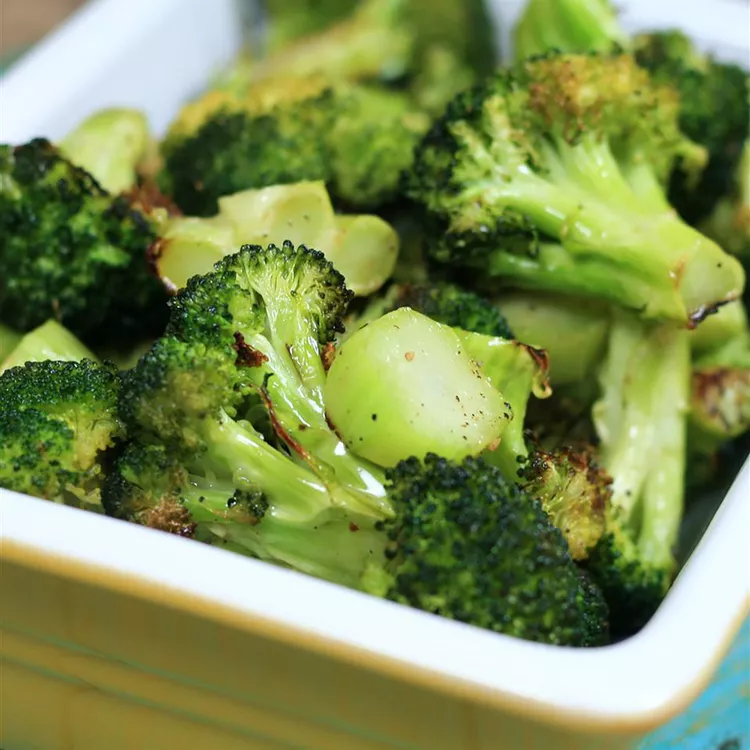

Roasted Broccoli

Description
Fairly simple recipe that should be easy to make by all!
Its quick to make and nutritious, as well as delicious!
Ingredients
- Broccoli Florets
- Broccoli Stems
- Salt
- Pepper
Instructions
- Cut the broccoli florets from the stalk, and cut the stem into slices.
- Throw the stem pieces and florets into a pan with oil and toss them.
- Transfer to a baking sheet.
- Season with salt and pepper, then roast in the oven as desired.
- Enjoy!